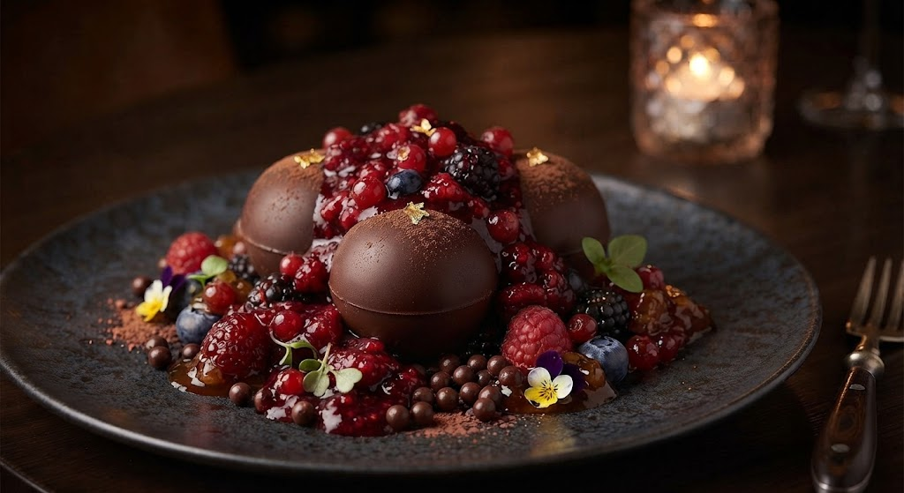

Menu Degustação — Cozinha da Marina
Uma sequência de quatro momentos pensada para contar, em pratos, a trajetória da Marina até aqui: do pão que abre a mesa até a sobremesa que fecha a noite. Cada prato foi escolhido por um motivo específico, não só pelo sabor.

Couvert — Pão de fermentação natural
Esse pão é a primeira receita que a Marina aprendeu com a avó. Entra no menu como abertura porque é o prato mais pessoal da casa — antes de qualquer técnica sofisticada, veio esse pão.

Entrada — Vieiras grelhadas
A entrada precisava anunciar o nível do menu sem pesar. As vieiras entraram depois de meses de teste buscando o ponto exato de textura — macia por dentro, levemente dourada por fora.

Prato Principal — Lombo de cordeiro
O cordeiro foi escolha da Marina desde o primeiro rascunho do cardápio: é o prato que ela cozinhava nas datas importantes da família, e virou o ponto alto da experiência aqui também.

Sobremesa — Esfera de chocolate
A sobremesa fecha o menu com um efeito de surpresa — a esfera derrete à mesa. Foi pensada pra deixar uma última impressão marcante, depois de um jantar mais contido nos outros pratos.

Harmonização — Vinho tinto reserva
O vinho foi escolhido pensando no cordeiro: um tinto de corpo médio, com taninos que não brigam com o jus de alecrim, mas também aguentam a intensidade da carne. Uma escolha pensada pra realçar o prato principal, não competir com ele.
Menu completo (4 pratos) — R$ 600 sem vinho
Menu completo com harmonização de vinho — R$ 750